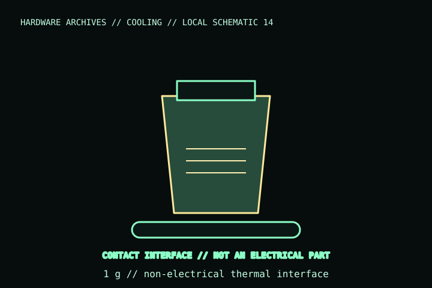

[ INDIVIDUAL COMPONENT // COOLING ]
Thermal Grizzly Kryonaut 1 g
A 1 g retail quantity of Thermal Grizzly Kryonaut thermal compound. This is a paste/interface material, not a heatsink, liquid-metal product, or electrically conductive substitute.

IDENTIFICATION: Match the complete model name, suffix, article number, bundle, revision, and host manual to the physical label before installation. Similar product names and variants may use different wiring or dimensions.
Specifications
| Catalog subcategory | Thermal accessories |
|---|---|
| Exact model / package | Thermal Grizzly Kryonaut; 1 g package |
| Interface type | Thermal compound for the mating surfaces of a CPU/GPU heat spreader or die and heatsink cold plate |
| Electrical / power | No electrical connector or supply; manufacturer describes it as electrically non-conductive. |
| Application / fit | No mounting pattern or cooler clearance; compatibility is determined by the host processor/cooler contact surfaces and service instructions. |
| Package handling | Use the manufacturer’s application guidance and storage/handling instructions; do not infer properties from Kryonaut Extreme or other variants. |
Compatibility, installation & service
- Apply only to the intended mating surface and amount described by the product/cooler instructions; keep compound off socket contacts and connectors.
- Check whether the cooler maker specifies a different interface material or limits application on exposed dies.
- Power/connector/clearance are not applicable to the compound itself; safe use depends on host surface, cooler contact pressure, and correct reassembly.
Service notes
Clean old compound from both contact surfaces with suitable lint-free materials before reapplication. Keep the syringe/package capped, avoid contamination, and follow the manufacturer’s storage and safety guidance.
Manufacturer references
- Thermal Grizzly — KryonautManufacturer product page; available package sizes and product-specific properties.
- Thermal Grizzly — Application guidesManufacturer instructions for thermal compound use.
Verify fit, wiring, and ratings against the manufacturer document for the exact unit and host. This catalog record is an identification aid, not a compatibility guarantee.